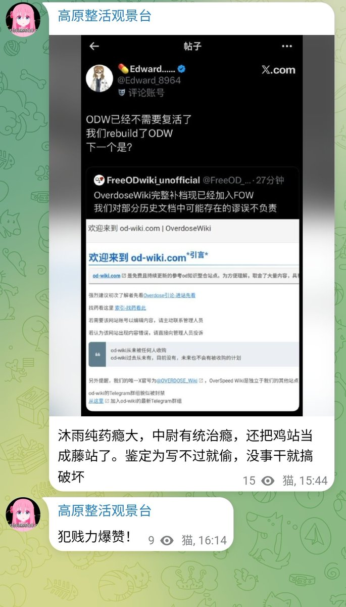
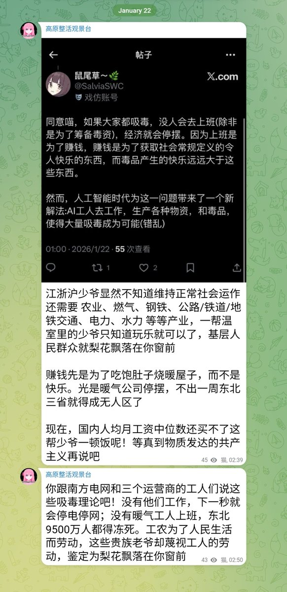

鼠尾草～🌿
@SalviaSWC
①我们开源的就是藤站的文档，不是鸡站，大家可以去看看来对比验证。
②所有文档均由知情人士提供，且文档存放位置为“补档”文件夹，不是我们自己的。所以我们做的和“偷”搭不上边。
③我们此举的目的是防止数据丢失，并提供给大家编写条目作参考的材料。等我们写过你的时候(很快就是了)，你可别哭啊😁


鼠尾草～🌿
@SalviaSWC
服了喵，后藤这是急了嘛，窝明确标了“(错乱)”的贴子还能拿出来讨伐，还开地图炮，没完没了了?😡
就算你是ASD，就算你听不懂人话，也不能这样瞎搞啊😢
你现在怎么变成这样了，后藤🥺 https://t.co/gHB33pjvqp